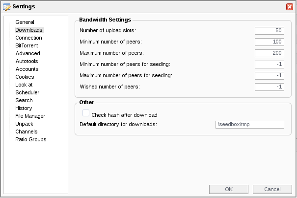
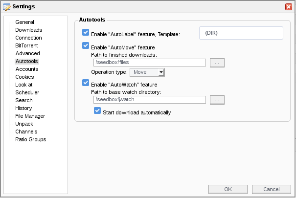

Configuration
Configuration file
Docker way
Recommended: This is the recommended way.
The configuration file should be placed in /conf.
Other ways
Warning: Docker is the recommended method.
You can use the example configuration file. This example file can be located in:
/usr/local/config/(pip install)~/.local/config/(pip install with user privileges)
To create your configuration directory and copy the example file:
mkdir -p ~/.config/seedboxsync
cp ~/.local/config/seedboxsync.yml.example ~/.config/seedboxsync/seedboxsync.yml
Or for a global configuration:
sudo mkdir -p /etc/seedboxsync
sudo cp /usr/local/config/seedboxsync.yml.example /etc/seedboxsync/seedboxsync.yml
Supported configuration file locations:
/etc/seedboxsync/seedboxsync.yml~/.config/seedboxsync/seedboxsync.yml~/.seedboxsync/config/seedboxsync.yml~/.seedboxsync.yml
Settings
Seedbox and BitTorrent client configuration
First, set the connection information for your seedbox. Currently, only SFTP is supported.
#
# Information about your seedbox
#
seedbox:
### Connection information
host: my-seedbox.ltd
port: 22
login: me
password: p4sw0rd
timeout: false
### Only 'sftp' is supported for now
protocol: sftp
### Chmod torrent after upload (set to false to disable)
### Use octal notation, e.g. 0o644
chmod: false
### Use a temporary directory for incomplete transfers (must be created manually)
tmp_path: /tmp
### Your BitTorrent client's "watch" folder (must be created manually)
watch_path: /watch
### The folder where your BitTorrent client puts finished files
finished_path: /files
### Remove a prefix from the synced path (usually the same as "finished_path")
prefixed_path: /files
### Exclude files with this suffix (e.g. incomplete downloads)
part_suffix: .part
### Exclude files from sync using a regular expression (Python re syntax)
### Example: .*missing$|^\..*\.sw
exclude_syncing: .*missing$|^\..*\.sw
Notes:
- To avoid permission issues between your transfer account and your BitTorrent client account, SeedboxSync can chmod the torrent file after upload.
- To prevent your BitTorrent client from watching (and using) an incomplete torrent file, SeedboxSync first transfers the torrent file to a temporary directory (
tmp_path). Once the transfer and chmod are complete, the file is moved to the watch folder. The temporary folder must also be configured in your BitTorrent client for unfinished torrents.

- The
watch_pathis your BitTorrent client's "blackhole" or "watch" folder, used for blackhole synchronization. - The
finished_pathis the folder where your BitTorrent client moves completed downloads. You can configure your client to use a specific folder for finished files.

NAS / Local configuration
Your NAS configuration is defined in the local section:
#
# Information about the local environment (NAS, etc.)
#
local:
### Your local "watch" folder
watch_path: ~/watch
### Path where files are downloaded
download_path: ~/Downloads/
### Path to the local SQLite database for tracking downloaded files
db_file: ~/.config/seedboxsync/seedboxsync.db
Ping service configuration
The ping service is triggered by the --ping argument.
Currently, only Healthchecks is supported.
Healthchecks
Add a Healthchecks configuration for each sync command:
#
# Healthchecks ping service
#
healthchecks:
### Sync seedbox part
sync_seedbox:
### Enable or disable the service
enabled: true
# Ping URL
ping_url: https://hc-ping.com/ca5e1159-9acf-410c-9202-f76a7bb856e0
### Sync blackhole part
sync_blackhole:
## Enable or disable the service
enabled: true
## Ping URL
ping_url: https://hc-ping.com/ca5e1159-9acf-410c-9202-f76a7bb856e0